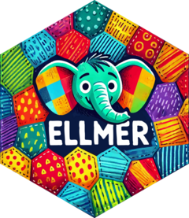
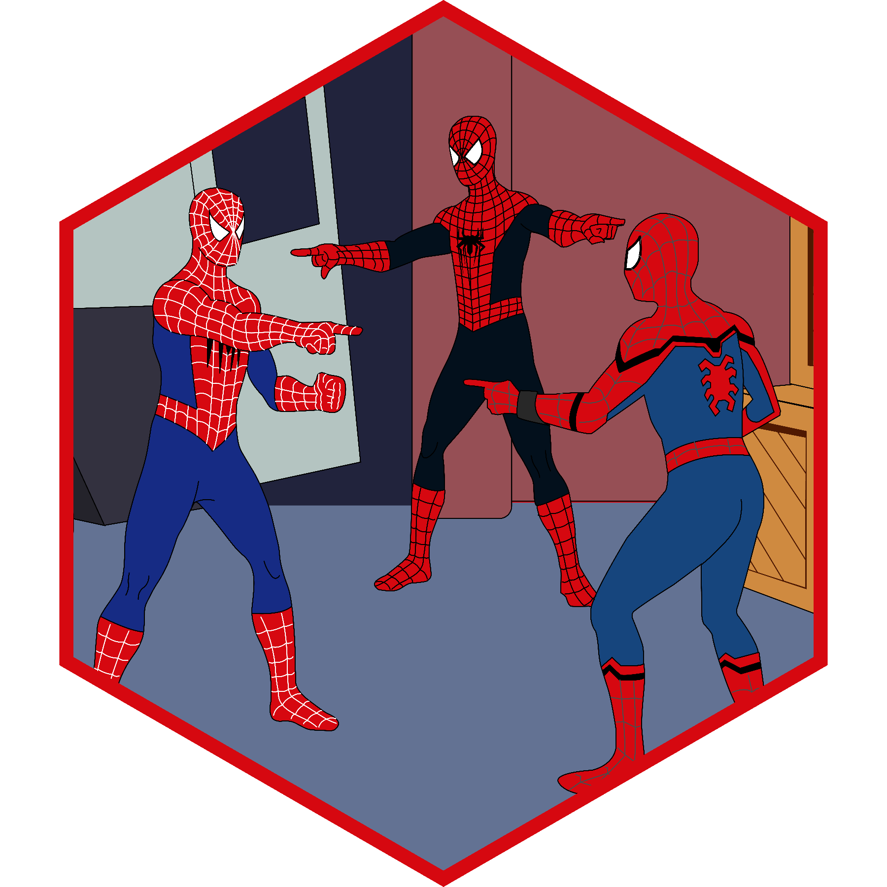

library(hellmer)
# Option 1: Sequential processing
chat <- chat_sequential(chat_openai, system_prompt = "Reply concisely")
# Option 2: Parallel processing via future
chat <- chat_future(chat_openai, system_prompt = "Reply concisely")
result <- chat$batch(list(
"What is R?",
"What is Python?",
"What is Julia?",
"What is Rust?"
))
# Methods
result$progress() # Return batch progress (if interuppted)
result$texts() # Return list of responses
result$chats() # Return ellmer chat objectsIntroduction
R is leading the way for data scientists to make the most of large language models. Posit’s official package ellmer provides a powerful functional interface for chatting, streaming responses, extracting data, and calling functions—built on the modern, safe, and fast HTTP client httr2.

Batch Processing Options
Data scientists often need to provide multiple prompts to LLMs to complete many actions at time—a process referred to as batch processing. Batch processing can be achieved at an API level for some providers (OpenAI, Anthropic, Gemini, and Mistral). This option is around 50% cheaper than requesting responses in real-time and delivers responses within 24 hours. See tidyllm for a CRAN package allows you to implement batch APIs.
Real-time batching costs more, but it delivers immediate responses and supports any LLM provider. While the CRAN release of ellmer (0.1.0) lacks batch processing capabilities, package creator Hadley Wickham is enhancing ellmer and httr2 with both real-time and API batching in their development GitHub repositories. In the meantime, I created a robust wrapper package called hellmer to fill this gap with a user-friendly interface with rich features such as:
- Tooling and structured data extraction
- State persistence and recovery
- Progress tracking
- Configurable output verbosity
- Automatic retry with backoff
- Timeout handling
- Sound notifications
Sequential vs Parallel Processing
There are two methods you can use for batch processing: sequential or parallel processing. Sequential processing always uses one process and makes one API request at a time.
Sequential processing is slow, which could be good or bad depending on your goal, and generally safer because you can save your progress at each step.
Parallel processing is fast but makes it tricky to keep track of all of the responses. In ellmer, parallel processing uses one R process via httr2, makes multiple requests at a time, and if interrupted, returns the partial responses; however, they won’t be saved to the disk. In hellmer, parallel processing uses multiple R processes via future, or CPU cores, and saves the responses in chunks of prompts to the disk. If interrupted, the last chunk that was saved can be resumed with no additional steps. If you care about speed, the processing times between ellmer and hellmer are very similar because most of the time is waiting for the API to respond. One limitation of hellmer is that you have to set the chunk size to equal the number of prompts to achieve the speeds seen below, which sacrifices safety as it will not return partial responses if interrupted like ellmer will.

Batch with hellmer
Implementing real-time batch processing in R is fairly easy. I will focus on using hellmer, but if you are curious how to batch using ellmer alone, check out the gist for the real-time batch performance benchmark.
I recommend setting your API keys for your LLM providers in my user or project environment using usethis::edit_r_environ(scope = c("user", "project"), which will open a .Renviron file where you can add any API key, such as OPENAI_API_KEY=your-key or ANTHROPIC_API_KEY=your-key.
Install the package from CRAN: install.packages("hellmer").
The two primary functions chat_sequential and chat_future create a sequential or parallel processor around an ellmer chat function. For example:
Compare the similarity of LLM responses
Imagine I have a batch of LLM responses. I ask for the sentiment of texts (positive, neutral, or negative). Like a good scientist, I should manually review the responses to assess their validity. In true psychometric fashion, I may even ask research assistants or colleagues to independently review the responses to determine the inter-rater reliability. I would then analyze the ratings and resolve any conflicts.
But, what if, I could simulate this process using different LLM models or providers. I could ask OpenAI and Claude to complete the same task, compare their responses, and resolve any conflicts. This strategy is often referred to as LLM-as-a-judge.
That’s how I got the idea for samesies—a package I developed to compare lists of texts, factors, or numerical values to measure their similarity.
Install the package from CRAN: install.packages("samesies").
The three primary functions (same_text, same_factor, and same_number) accept two or more lists as inputs, including nested listed, but are inherently typed and will not work with mixed types. For example:
# Text
r1 <- list(
"R is a statistical computing software",
"R enables grammar of graphics using ggplot2",
"R supports advanced statistical models"
)
r2 <- list(
"R is a full-stack programming language",
"R enables advanced data visualizations",
"R supports machine learning algorithms"
)
tex <- same_text(r1, r2)
# Factors
cats1 <- list("R", "R", "Python")
cats2 <- list("R", "Python", "R")
fct <- same_factor(cats1, cats2,
levels = c("R", "Python")
)
# Numbers
n1 <- list(1, 2, 3)
n2 <- list(1, 2.1, 3.2)
num <- same_number(n1, n2)
Complete example
I’ll use a minimal example to demonstrate how to batch and evaluate the similarity of LLM responses in R using hellmer and samesies.
I will use hellmer to chat with OpenAI (gpt-4o) and Claude (claude-3-5-sonnet-latest). I’ll ask for the sentiment of our prompts as a:
- text (emotional tone),
- factor (positive, neutral, or negative), and
- number (0.0 to 1.0).
Below are my prompts and code to batch the LLM responses:
library(hellmer)
prompts <- list(
# Positive
"R makes data visualization incredibly easy with ggplot2.",
"I love how R integrates statistics and data science seamlessly.",
"The R community is really supportive and welcoming.",
# Neutral
"R is commonly used in academic research.",
"R has both base functions and tidyverse functions for data manipulation.",
"RStudio is one of the most popular IDEs for R development.",
# Negative
"R is painfully slow for large datasets compared to Python.",
"R's object-oriented system is confusing and inconsistent.",
"Installing packages in R can be frustrating due to dependency errors.",
# Ambiguous
"I use R every day, but I'm not sure if I love it or hate it.",
"Tidyverse makes R more accessible, but it adds another layer of abstraction.",
"R has a steep learning curve, but once you get it, it's great."
)
openai <- chat_future(ellmer::chat_openai)
claude <- chat_future(ellmer::chat_claude)
type_sentiment <- type_object(
"Extract sentiments",
sentiment_str = type_string("Describe the emotional tone in one word"),
sentiment_fct = type_enum("The sentiment type", c("positive", "neutral", "negative")),
sentiment_num = type_number("Negative to positive sentiment score, 0.00 to 1.00"),
)
openai_dat <- openai$batch(prompts, type_spec = type_sentiment)
claude_dat <- claude$batch(prompts, type_spec = type_sentiment)
openai_dat <- openai_dat$structured_data()
openai_dat <- list(
sentiment_str = purrr::map_chr(openai_dat, "sentiment_str"),
sentiment_fct = purrr::map_chr(openai_dat, "sentiment_fct"),
sentiment_num = purrr::map_dbl(openai_dat, "sentiment_num")
)
claude_dat <- claude_dat$structured_data()
claude_dat <- list(
sentiment_str = purrr::map_chr(claude_dat, "sentiment_str"),
sentiment_fct = purrr::map_chr(claude_dat, "sentiment_fct"),
sentiment_num = purrr::map_dbl(claude_dat, "sentiment_num")
)I wrangle the nested list that ellmer returns to a list of lists, because I will extract them based on type to run my samsies functions.
For those who are curious, here’s what the wrangled data looks like:
openai_dat
# $sentiment_str
# [1] "appreciative" "appreciative" "Positive and encouraging" "neutral"
# [5] "informative" "Informative" "Critical" "frustrated"
# [9] "frustration" "ambivalent" "Balanced" "Encouraging"
# $sentiment_fct
# [1] "positive" "positive" "positive" "neutral" "neutral" "neutral" "negative" "negative" "negative" "neutral" "neutral"
# [12] "positive"
# $sentiment_num
# [1] 0.85 0.95 0.88 0.50 0.50 0.75 0.35 0.15 0.25 0.50 0.50 0.75
claude_dat
# $sentiment_str
# [1] "enthusiastic" "enthusiastic" "enthusiastic" "favorable" "neutral" "appreciative" "frustrated" "frustrated"
# [9] "frustrated" "ambivalent" "ambivalent" "optimistic"
# $sentiment_fct
# [1] "positive" "positive" "positive" "positive" "neutral" "positive" "negative" "negative" "negative" "neutral" "neutral"
# [12] "positive"
# $sentiment_num
# [1] 0.85 0.85 0.90 0.75 0.50 0.75 0.20 0.20 0.20 0.50 0.50 0.70I’m ready to compare the responses:
library(samesies)
check_str <- same_text(
"openai" = openai_dat$sentiment_str |> as.list(),
"claude" = claude_dat$sentiment_str |> as.list()
)
average_similarity(check_str)
# osa lv dl hamming lcs qgram cosine jaccard jw soundex
# 0.390 0.390 0.390 0.194 0.219 0.584 0.643 0.495 0.666 0.250
check_fct <- same_factor(
"openai" = openai_dat$sentiment_fct |> as.list(),
"claude" = claude_dat$sentiment_fct |> as.list(),
levels = c("positive", "neutral", "negative")
)
average_similarity(check_fct)
# exact
# 0.833
check_num <- same_number(
"openai" = openai_dat$sentiment_num |> as.list(),
"claude" = claude_dat$sentiment_num |> as.list()
)
average_similarity(check_num)
# exact raw exp percent normalized fuzzy
# 0.417 0.056 0.948 0.883 0.930 0.950From this analysis, I learned that the two models have good agreement on the factor-based sentiment classification (83% exact match), excellent agreement on the numerical sentiment scores (93% normalized similarity), and moderate agreement on the text descriptions (64% cosine similarity). The lower agreement on text descriptions reflects the more subjective nature of choosing a single word to describe emotional tone.
Conclusion
Working with LLMs in R has evolved rapidly, and the combination of hellmer for efficient batching and samesies for response comparison creates a powerful toolkit for data scientists. These packages fill important gaps in the R ecosystem and enable more sophisticated LLM workflows.
The ability to validate LLM outputs against each other provides a level of quality assurance that’s essential for production systems. The example demonstrated that models tend to agree strongly on structured outputs, with more variation in free-text responses—a pattern that can guide how we design extraction prompts.
Looking ahead, these tools will become increasingly important as organizations integrate LLMs into their data pipelines. The R ecosystem continues to lead in providing pragmatic solutions for working with AI, allowing data scientists to leverage these technologies without sacrificing reliability or interpretability.
I hope that these packages can become part of the standard toolkit for anyone working with LLMs in R. The combination of efficient batching and systematic comparison provides the foundation for reliable, production-ready LLM implementations.